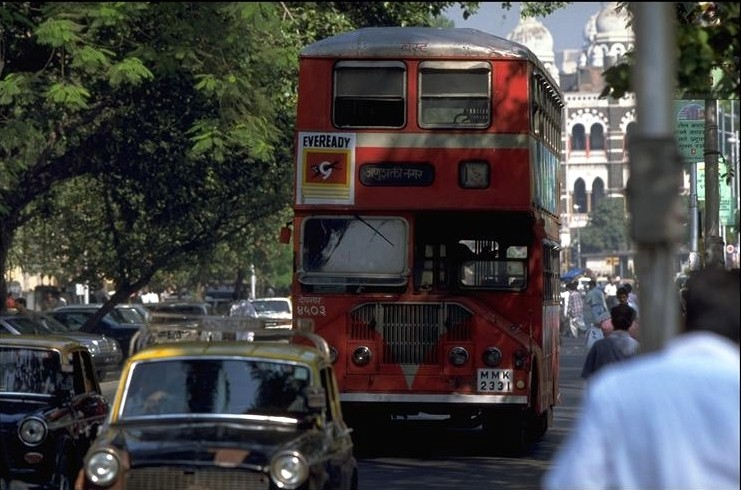
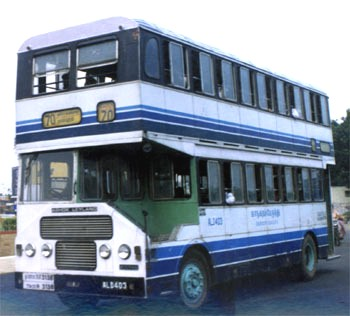
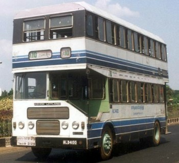
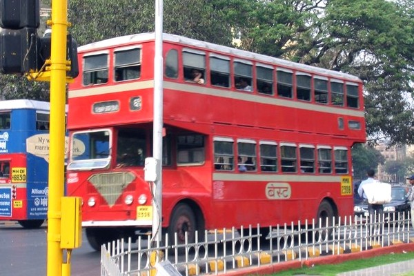
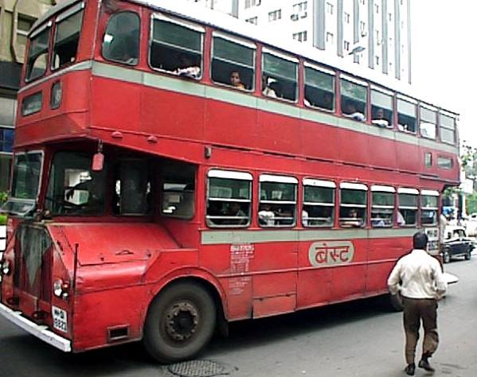
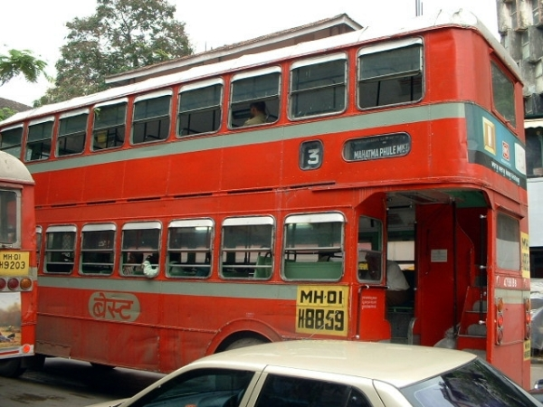
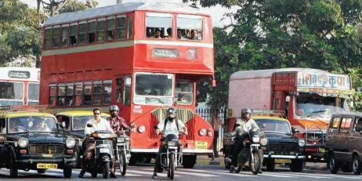
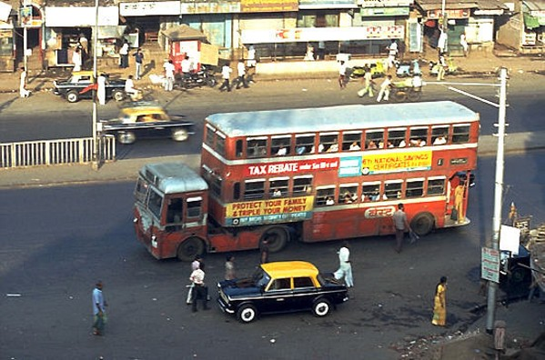

|
Ashok Leyland "Titan" ALPD1/1 印度神話  |
由Ashok Leyland於1968年開始生產的雙層巴士產品--Ashok Titan ALPD1/1，可說是印度人的神話!!當年英國利蘭授權Ashok Leyland生產Titan PD3型時，正好是Leyland Titan PD3停產之時。
時至今日，這款傳統的半艙式巴士，仍然在印度的大城市扮演著重要的運輸角色，甚至Ashok Leyland在21世紀的今天仍然繼續生產這款生產期長達38年的雙層巴士--Ashok Titan ALPD1/1。
現時，Ashok Titan ALPD1/1仍然在新德里、孟買及孟加拉三個城市，各自扮演不同的角色。儘管外貌互有差異，但別具吸引力，令人目不暇給。
|
 |
 |
作為印度的首都，新德里(New Delhi)擁有完善的交通網絡，雙層巴士當然不可少。(搜集圖片)

半駕駛艙、前置引擎、車尾開放式平台.....除了英國倫敦的紅巴士Routemaster外，堪稱是十里洋場的印度孟買，同樣可以找到富有傳統特色的紅巴士。

印度人不斷改良半艙式巴士的設計，可見引擎室的容積增加，前輪略為後移。(圖片來源﹕Wikipedia)

Ashok雙層巴士的設計源自英國款式，包括車尾樓梯與車尾開放式的登車平台。(圖片來源﹕Wikipedia)

滿載乘客的Ashok雙層巴士出現在印度孟買的街頭。這些雙層巴士全是Ashok Leyland生產，型號取材自1968年停些的Leyland Titan PD3。這些半駕駛艙式雙層巴士，時至今日仍在生產，只是引擎已從Ashok Leyland的O.680改為日本日野車廠(Hino)的產品。(圖片來源﹕Wikipedia)

於Ashok Leyland Tian推出之前，印度兩大城市﹕孟買(Bombay)及加爾各答(Calcutta)曾使用這款Trailar Bus形式的雙層巴士。Trailar Bus於50年代在德國及歐洲地區大行其道，但像印度這樣配上雙層車身則是獨一無二。在孟買行走的Trailar Bus(上圖)一度行走至80年代中期退役，現時只餘下加爾各答(下圖)仍然使用這款雙層巴士。
(搜集圖片)